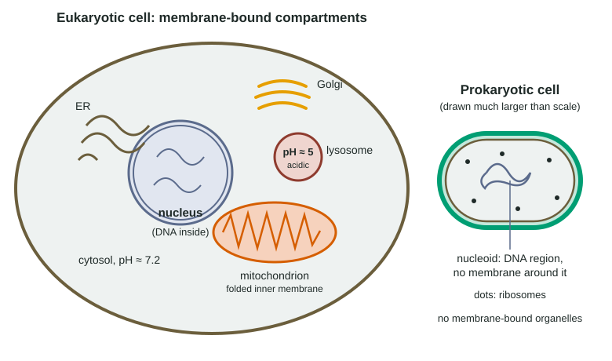

Cell Compartmentalization
Internal membranes divide a eukaryotic cell into compartments.
Part 1 · Hook
Why this matters
Inside each of your liver cells sit hundreds of tiny sacs of acid, about a hundred times more acidic than the fluid around them, filled with enzymes that can take apart almost anything a cell is made of. The cell survives because each sac is sealed off by a membrane. Dividing one cell into many separate rooms is what lets it run incompatible chemistry all at once.
Part 2 · Before you start
What this builds on
Part 3 · Prerequisite check
Quick check before you start
1. What does a lysosome do?
- It breaks down worn-out cell parts and material taken into the cell, using enzymes.
- It makes proteins for export from the cell.
- It holds the cell's DNA.
- It makes ATP from food molecules.
Show the answer
Lysosomes are membrane sacs of digestive enzymes that break down large molecules, old organelles and material brought in by endocytosis.
- Correct: It breaks down worn-out cell parts and material taken into the cell, using enzymes.:
- It makes proteins for export from the cell.:
- It holds the cell's DNA.:
- It makes ATP from food molecules.:
2. What happens to a cube's surface area-to-volume ratio as the cube gets larger?
- It gets smaller, because volume grows faster than surface area.
- It gets larger, because surface area grows faster than volume.
- It stays the same at every size.
- It depends only on the cube's material.
Show the answer
Doubling the side multiplies surface area by 4 but volume by 8, so the ratio falls as cells grow.
- Correct: It gets smaller, because volume grows faster than surface area.:
- It gets larger, because surface area grows faster than volume.:
- It stays the same at every size.:
- It depends only on the cube's material.:
Part 4 · See it
See it first

Part 5 · Step by step
How it works, step by step
- Membranes are barriers to ions and most polar molecules, and transport proteins in each membrane control what crosses it.Each organelle can hold its own mix of molecules: its own enzymes, its own concentrations, its own pH.
- Proton pumps in the lysosome membrane keep its inside at about pH 5, while the cytosol stays near pH 7.2.Lysosomal enzymes work well inside the lysosome but poorly if they leak out, so the rest of the cell is protected.
- Opposing processes, such as building fatty acids and breaking them down, sit in different compartments.They do not undo each other, and the cell can run and control each one separately.
- Packing reactants into a small compartment keeps them at high concentration.Reactions run faster than they would if the same molecules were spread through the whole cell.
- Some internal membranes are folded or stacked, like the cristae of mitochondria and the thylakoids of chloroplasts.Far more membrane area, and so more membrane proteins, fits in a small space.
- Prokaryotes have no membrane-bound organelles.They still organize their insides: DNA gathers in the nucleoid, and some have internal membrane folds or protein-walled compartments.
Part 6 · Key ideas
Key ideas
- Compartmentalization means internal membranes divide a eukaryotic cell into organelles, each with its own contents and conditions.
- Three payoffs: separate conditions (acid lysosome, neutral cytosol), separate processes that would undo each other, and concentrated reactants in small spaces.
- Folded membranes (cristae, thylakoids, ER) add area. More area means more room for membrane proteins that do the work.
- Prokaryotes lack membrane-bound organelles but are not unorganized: their DNA sits in a nucleoid, a region with no membrane around it.
Part 7 · Misconception
A common mistake
The wrong idea: Prokaryotic cells have no internal organization: everything floats around randomly in one open space.
What actually happens: They lack membrane-bound organelles, but their DNA gathers in the nucleoid, and some species have internal membrane folds or protein shells that set aside space for particular jobs.
Part 8 · Check yourself
Check yourself
Exam-style questions. Anything you miss goes into your review queue.
Graph
Two enzymes across a range of pH
Researchers purified two enzymes from liver cells: one found inside lysosomes and one found in the cytosol. They measured each enzyme's activity in buffers from pH 3 to pH 8, using the same amount of enzyme, the same amount of the molecule it breaks down, and 37 °C for every test. Activity is shown as a percent of each enzyme's highest activity; each point is the mean of three trials. The inside of a lysosome is about pH 5 and the cytosol about pH 7.2.
Lysosomal enzymeCytosolic enzyme
Data table
| pH | Lysosomal enzyme | Cytosolic enzyme |
|---|---|---|
| 3 | 35 | 2 |
| 4 | 82 | 8 |
| 5 | 100 | 30 |
| 6 | 61 | 72 |
| 7 | 12 | 100 |
| 8 | 4 | 78 |
1. Which statement correctly describes the lysosomal enzyme?
- It is most active near pH 5 and works at about one-eighth of that at pH 7.
- It is most active near pH 7 and works poorly in acidic conditions below pH 5.
- It works equally well across the whole range from pH 3 to pH 8.
- It is most active at pH 3 and loses activity steadily as pH rises.
Show the answer
The lysosomal curve peaks at 100% at pH 5 and drops to 12% at pH 7, about one-eighth of its peak.
- Correct: It is most active near pH 5 and works at about one-eighth of that at pH 7.: Correct: 100% at pH 5, 12% at pH 7.
- It is most active near pH 7 and works poorly in acidic conditions below pH 5.: That describes the cytosolic enzyme, which peaks at pH 7.
- It works equally well across the whole range from pH 3 to pH 8.: Activity ranges from 4% to 100%, so it changes a great deal with pH.
- It is most active at pH 3 and loses activity steadily as pH rises.: At pH 3 the enzyme is at 35%; it rises to its peak at pH 5 before falling.
2. If a lysosome leaks a few of its enzymes into the cytosol, the cell usually suffers little damage. Which explanation do the data support?
- At the cytosol's pH of about 7.2, the lysosomal enzyme works at a small fraction of its top rate.
- The cytosolic enzyme breaks down the leaked lysosomal enzyme as soon as it reaches the cytosol.
- The lysosomal enzyme becomes more active at pH 7.2, but the cytosol contains nothing it can break down.
- The cytosol is more acidic than the lysosome, so the leaked enzyme is quickly destroyed by the acid.
Show the answer
The lysosomal enzyme is at 12% at pH 7 and lower above it. Keeping it in an acidic compartment lets it work there, while the neutral cytosol all but switches it off if it escapes: a built-in safety feature of compartments.
- Correct: At the cytosol's pH of about 7.2, the lysosomal enzyme works at a small fraction of its top rate.: Correct: the pH difference between the two compartments protects the cytosol.
- The cytosolic enzyme breaks down the leaked lysosomal enzyme as soon as it reaches the cytosol.: The data show activity versus pH; nothing in them shows one enzyme breaking down the other.
- The lysosomal enzyme becomes more active at pH 7.2, but the cytosol contains nothing it can break down.: Activity falls from 100% at pH 5 to 12% at pH 7, so it becomes less active in the cytosol, not more.
- The cytosol is more acidic than the lysosome, so the leaked enzyme is quickly destroyed by the acid.: The cytosol (pH 7.2) is less acidic than the lysosome (pH 5), not more.
3. How many times more active is the lysosomal enzyme at pH 5 than at pH 7? Give your answer to one decimal place.
Type a number in times.
Show the answer
100% ÷ 12% ≈ 8.3. Moving the enzyme from the lysosome's pH to the cytosol's cuts its activity more than eightfold.
- Answer: 8.3 times
4. A drug blocks the proton pumps in lysosome membranes, so the inside of the lysosomes rises from pH 5 to pH 7. Which effect is most likely?
- Material taken into lysosomes is broken down much more slowly, so it builds up inside them.
- Material in lysosomes is broken down faster, because the cytosolic enzyme now works inside them.
- The lysosomal enzymes leak out and begin digesting the cytosol at their highest rate.
- Lysosomes work as before, because their enzymes are protected by the lysosome membrane.
Show the answer
At pH 7 the lysosomal enzymes work at about 12% of their peak, so digestion inside the lysosome slows sharply and undigested material accumulates.
- Correct: Material taken into lysosomes is broken down much more slowly, so it builds up inside them.: Correct: losing the acidic condition cripples the enzymes that need it.
- Material in lysosomes is broken down faster, because the cytosolic enzyme now works inside them.: The cytosolic enzyme is not inside the lysosome; raising the pH does not move it there.
- The lysosomal enzymes leak out and begin digesting the cytosol at their highest rate.: The drug changes pH, not the membrane's integrity; and at pH 7 the enzymes would be weak even if they leaked.
- Lysosomes work as before, because their enzymes are protected by the lysosome membrane.: The membrane keeps the enzymes in, but it is the acidic pH inside, which the pumps maintain, that lets them work.
5. Why did the researchers use the same temperature and the same amounts of enzyme and of the molecule being broken down at every pH?
- So pH was the one factor that differed, and any change in activity could be traced to it.
- So that the enzymes would work at their highest activity in each test, regardless of the pH.
- So that the lysosomal and cytosolic enzymes would give the same results and could be averaged.
- So that the experiment needed no repeated trials, because nothing could vary between tests.
Show the answer
pH is the independent variable. Holding everything else constant (controlled variables) means differences in activity can be attributed to pH alone.
- Correct: So pH was the one factor that differed, and any change in activity could be traced to it.: Correct: controlled variables keep other factors from explaining the pattern.
- So that the enzymes would work at their highest activity in each test, regardless of the pH.: Activity still changed a great deal with pH; controlling other factors does not hold activity at its peak.
- So that the lysosomal and cytosolic enzymes would give the same results and could be averaged.: The two enzymes behaved very differently, which is the point of comparing them; they were not averaged.
- So that the experiment needed no repeated trials, because nothing could vary between tests.: Random variation still occurs, which is why each point is a mean of three trials.
6. Liver cells build fatty acids in the cytosol and break fatty acids down inside mitochondria. Why is it useful that these happen in different compartments?
- Keeping them apart stops new fatty acids from being broken down straight away, wasting energy.
- Keeping them apart lets both processes use the same enzymes, which saves the cell from making extra proteins.
- Keeping them apart means the fatty acids can be built and broken down at the same rate in each compartment.
- Keeping them apart lets fatty acids leave the cell faster, because each compartment opens to the outside.
Show the answer
Building and breaking down the same molecule in one space would undo each other in a pointless, energy-wasting cycle. Separate compartments let the cell control each process on its own.
- Correct: Keeping them apart stops new fatty acids from being broken down straight away, wasting energy.: Correct: separating opposing processes keeps them from cancelling each other out.
- Keeping them apart lets both processes use the same enzymes, which saves the cell from making extra proteins.: Building and breaking down use different sets of enzymes; separation is not about sharing enzymes.
- Keeping them apart means the fatty acids can be built and broken down at the same rate in each compartment.: The point is to control them separately, not to make them equal in rate.
- Keeping them apart lets fatty acids leave the cell faster, because each compartment opens to the outside.: The cytosol and mitochondria do not open to the outside of the cell.
7. A student claims that because prokaryotes have no membrane-bound organelles, their insides have no organization at all. Which observation best refutes the claim?
- Their DNA gathers in a nucleoid, and some have internal membrane sheets for photosynthesis.
- Their cytoplasm contains ribosomes, which are made of rRNA and protein and build the cell's proteins.
- Their plasma membrane contains transport proteins that control which substances enter and leave.
- They are usually much smaller than eukaryotic cells, so substances reach each part of the cell by diffusion.
Show the answer
A DNA-rich nucleoid and specialized internal membranes are regions set aside for particular jobs: organization without membrane-bound organelles.
- Correct: Their DNA gathers in a nucleoid, and some have internal membrane sheets for photosynthesis.: Correct: the nucleoid and internal membrane folds show specialized regions inside prokaryotes.
- Their cytoplasm contains ribosomes, which are made of rRNA and protein and build the cell's proteins.: Having ribosomes is true of all cells; it does not show that parts of the cell are set aside for particular jobs.
- Their plasma membrane contains transport proteins that control which substances enter and leave.: This describes the surface membrane, not organization inside the cell.
- They are usually much smaller than eukaryotic cells, so substances reach each part of the cell by diffusion.: Small size explains why prokaryotes manage without organelles; it does not show internal organization.
Part 9 · Summary
Summary
Internal membranes divide a eukaryotic cell into compartments. Because membranes and their transport proteins control what crosses, each compartment keeps its own contents and conditions: lysosomes stay at about pH 5 inside a cytosol at about 7.2, opposing processes run apart, and reactants stay concentrated. Folded membranes such as cristae and thylakoids pack extra area for membrane proteins. Prokaryotes have no membrane-bound organelles, but their DNA is concentrated in a nucleoid and some have other specialized regions.
Part 10 · Up next
What comes next
Part 11 · Connections